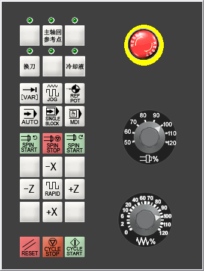
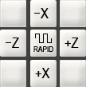
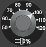
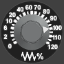

机床操作面板位于窗口的左侧或右侧，如下图所示。主要用于控制机床的运动和选择机床运行状态， 由模式选择旋钮、数控程序运行控制开关等多个部分组成，每一部分的详细说明如下。

MDA : 用于直接通过操作面板输入数控程序和编辑程序。 AUTO ： 进入自动加工模式. JOG ： 手动方式,手动连续移动台面或者刀具。 REFPOT : 手动方式回参考点. VAR : ��量选择. SINGL : 自动加工模式中,单步运行. SPINSTAR : 主轴正转. SPINSTAR : 主轴反转. SPINSTP : 主轴停止. RESET : 复位键. CYCLESTAR : 循环启动. CYCLESTOP : 循环停止. 方向键 :


